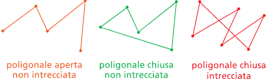

Enti fondamentali
Il punto non ha grandezza (è adimensionale) e la sua unica caratteristica è la sua posizione.
La retta è una sequenza infinita di punti allineati. È illimitata in entrambe le direzioni, ossia è infinita.
Definizione 1.1.0 (Semiretta) La semiretta è ciascuna delle parti in cui una retta viene suddivisa da un punto, chiamato origine della semiretta. Anche la semiretta, così come la retta, è infinita, essa ha un inizio ma non ha una fine e ha solo la dimensione lunghezza. □
Per determinare una semiretta basta darne l'origine O, e un altro suo punto B, e la semiretta così determinata si chiama «semiretta OB».
Definizione 1.1.1 (Segmento) Si definisce segmento la parte di retta delimitata da due punti: Data una retta orientata e due suoi punti A e B, con A che precede B, chiamiamo segmento AB l'insieme dei punti della retta formato da A, da B e dai punti che seguono A e precedono B. □
I punti A e B si chiamano estremi del segmento, i punti compresi fra A e B sono i punti interni del segmento. Un segmento è nullo se i suoi estremi coincidono, ossia se è privo di punti interni. Il segmento nullo è costituito da un solo punto.
Fissati due punti A e B, possimao anche pensare alla retta AB divisa in tre parti: il segmento AB, la semiretta di origine A che non contiene B e la semiretta di origine B che non contiene A. Queste due semirette vengono dette prolungamenti del segmento AB.
Due segmenti sono consecutivi se hanno in comune soltano un estremo; sono adiacenti quando sono consecutivi e appartengono alla stessa retta.
| TERMINE | DEFINIZIONE | DISEGNO |
|---|---|---|
| Segmento di estremi A e B | La figura formata da tutti i punti della retta (orientata) AB compresi tra A e B, inclusi A e B. | |
| Segmenti consecutivi | Due segmenti che hanno in comune soltanto un estremo. |  |
| Segmenti adiacenti | Due segmenti consecutivi che appartengono alla stessa retta. |  |
Poligonali
Definizione 1.2.2 (Poligonale). Si dice poligonale una figura costituita da un insieme ordinato di segmenti in cui:
un segmento e il suo successivo sono sempre consecutivi ma non adiacenti;
ogni estremo dei segmenti appartiene al massimo a due di essi.
Una poligonale è chiusa se l'ultimo estremo coincide con il primo. In caso contrario la poligonale è aperta. I segmenti di una poligonale si dicono anche lati della poligonale. Una poligonale è intrecciata se almeno due suoi lati (non consecutivi) si intersecano.
